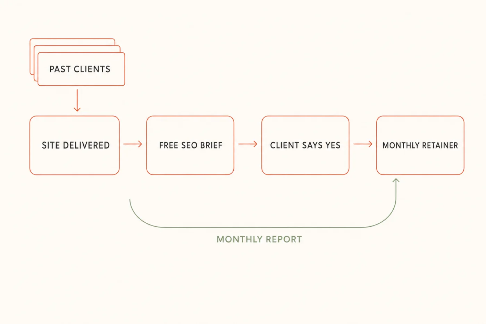
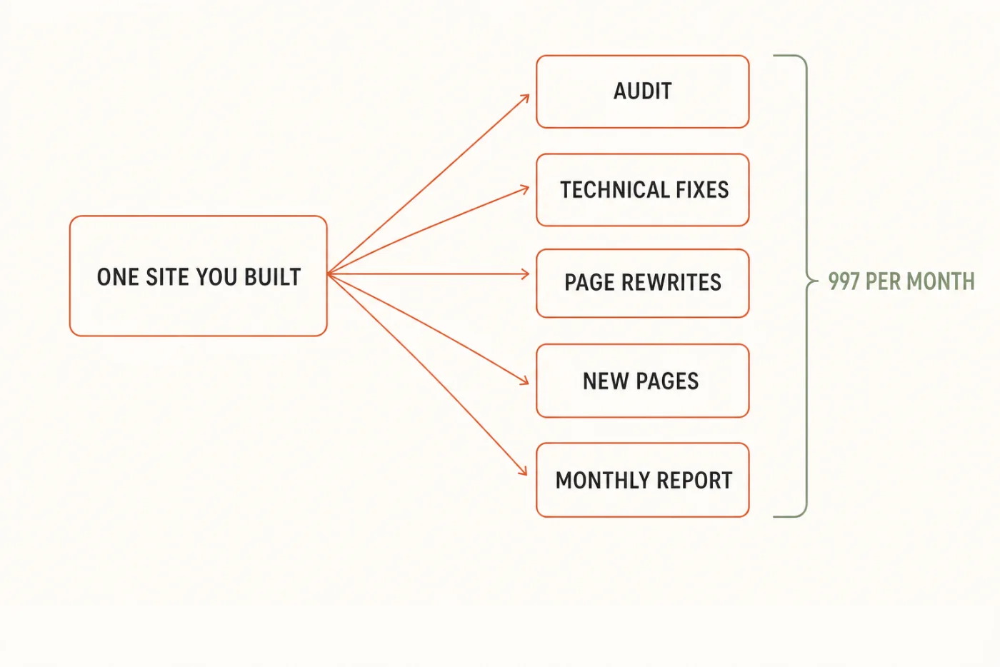

Turn every site you've built
into a monthly retainer
The clients you delivered last year already trust you, already have a site, and are already buying SEO from someone else — or from nobody. Here's the system for going back and closing them.
The Search Console graph you'll be putting in month three's report →
Free · No credit card required


Hey there, I'm Nicholas 👋
I grew my last B2C app to 15K Google clicks/month as a solo founder, then sold it. Turns out I fell in love with SEO along the way.
So now I'm building ChatSEO.app — an all-in-one SEO employee whose job is to make sure you rank #1 in Google and in AI search.
We passed 600 customers this year, and when I looked at who pays us the most, it wasn't SEO consultants. It was web designers. I got on ten calls to ask why, and this playbook is what they told me. Try it free →
Every project ends with the same question
The site is live. The client is happy. And then they ask: "do you also do SEO?"
For most people building websites, the honest answer has always been no. Or the slightly worse version — "I know a guy" — followed by an introduction, maybe a small referral fee, and a client relationship that now belongs to somebody else.
That handoff is the single most expensive habit in the web design business, and it's worth doing the arithmetic on it once. A $500–1,000/month SEO retainer is $6,000–12,000 a year. Say you've shipped thirty sites in the last three years and half of them eventually bought SEO from somebody. That's not a rounding error. That's a second business you introduced to your own clients.
You already own the two hard parts
Every SEO agency on earth spends its whole existence trying to acquire two things you got for free the moment the site went live.
Trust. You've already delivered something. They've already paid you and been happy about it. An SEO agency cold-emailing that same person starts at zero and has to spend three months and a discovery call earning what you already have.
Access. You built the site. You know the CMS, you have the logins, you probably set up the Search Console property yourself. The single most common reason SEO engagements stall in month one is waiting on access. You skip that entirely.
What you didn't have was the third part — the actual delivery. That's the only thing that ever made the answer "no."
In one line. You're not starting an SEO agency. You're adding one line to an invoice you already send, to a client who already pays it.
Part 1 — The web designers already doing this
These are real ChatSEO reviews, unedited. Three of them are translated from French, marked as such.
I'm putting these first because the pitch only matters if somebody shaped like you has already made it work. Here's what they wrote, on their own, in public.
As a web designer, ChatSEO has become my secret weapon. This AI SEO tool lets me add a new revenue stream to my business by offering complete SEO services to my web design clients. The AI generates SEO audits and optimised copy in one click, which saves me an enormous amount of time while raising the value of my offers. Essential for diversifying your services.
Geoffrey Merlet · Web designer translated from French
ChatSEO with Search Console and Analytics connected produces amazing in-depth results. Using this helped us to secure a multi-year deal with a UK top 100 law firm as they were so impressed with our granular level of reporting. On top of this, the team built a new element into the product that we asked for. Highly recommended!
Simon Atherley · Founder, SimplyPage1
Read that second one again, because it contains the whole strategy in one sentence: the thing that won the multi-year deal wasn't the SEO. It was the reporting. The client could finally see what was happening. That's what a retainer actually sells.
I use ChatSEO mainly to find keywords and rewrite pages on my site. I really like that it takes in so much context — Search Console, Analytics, the SERP, competitors. I use it mostly to improve the SEO of my web agency's own site. I've been using it for a month and my average position went from 56 to 24. There's still work to do but it's genuinely great. This week it found me a very low-competition position with volume. Three days later, I was in the top 5.
Alexandre Soete · CEO, A&F Développement translated from French
I tested ChatSEO on my agency's site. First I asked it to analyse the site and lay out an SEO strategy. Incredible — it surfaced every single improvement point I'd already noted myself. So I thought, alright, we're on the same wavelength. Then I tested it on a page to see what optimisations to make. Really remarkable: it walks you through the structure of the page and its content.
David Aumont · CEO, Artdim translated from French
I've used ChatSEO almost since the beginning. I find it very sharp on recommendations but also on content production — though you do need to give it good context to get good output. Which, when you think about it, is logical. Qualified traffic arriving slowly but surely.
Antoine Tournaire · Owner, E-Dilik — web & graphic designer translated from French
And one more, from a freelancer who found a use I didn't expect and which turns out to be step one of the system below — using it on sites he doesn't own yet, to decide who to go after.
For me ChatSEO is a genuine revolution. Every day I find a new way to use it: strategic recommendations, technical audits… and even prospecting. That's where the tool surprised me most: I now use it to analyse my prospects' sites, score them as leads, and target my clients much better. A formidable saving of time and effort.
Léo Cottu · Freelance SEO & content strategy translated from French
Run it on one of your own client sites →
Part 2 — The system for reopening old clients
Four steps. The whole thing runs on the client list already sitting in your invoicing software.
The reason this works better than any cold outreach you'll ever do is that you're not asking for a meeting. You're sending someone a specific, personalised piece of information about a website they own and care about — and you happen to be the person who built it. That email gets opened every time.
Step 0 — Build the list (20 minutes, once)
Open your invoices from the last three years and write down every client whose site is still live. Then sort them into three groups, because they need different emails:
- Tier A — they already asked. Anyone who ever said "do you do SEO?" and got a no. These are pre-sold. Start here, today.
- Tier B — the business is clearly still growing. They've hired, expanded, added services, changed their prices. They have budget and a reason to want more traffic.
- Tier C — the site hasn't changed since you delivered it. Same pages, no blog, nothing added. This is the biggest group and the easiest brief to write, because there is always something to find.
Don't over-qualify. Twenty names is enough to start, and half of the yeses come from people you'd have bet against.
Step 1 — Run the brief (10 minutes per client)
This is the whole trick. You don't email them asking whether they'd like to talk about SEO. You email them a finding about their own website. Something specific enough that they read it, and small enough that it's obviously not a sales deck.
The reopening brief
Produces a one-page finding you can paste into an email. Deliberately capped — three items, not thirty, because a wall of problems reads as a sales pitch and one clear problem reads as a favour.
I built this website for a client and I want to reopen the relationship with an SEO offer. Site: [URL] Read the live site. If you cannot load it, say so and stop — do not work from what you think the business does. Give me exactly THREE findings, chosen because a non-technical business owner would immediately understand why they cost money. Prefer: a service or product page that exists but targets no searched term; a page that should exist and doesn't; a title or meta description that is losing clicks it already earns. For each finding: what it is, in one plain sentence a business owner understands, with no SEO jargon | which page | what searching customers are typing instead | what I would change. Never invent a search volume, a ranking or a traffic figure. If you do not have the number, write "I'd need Search Console access to size this" — do not estimate it. Then write ONE headline sentence I can put at the top of an email: the single most valuable thing this site is missing, phrased as an opportunity, not a criticism. It must not imply the site was built badly. Do not write the email. Do not list alternatives.
Note the last constraint in the finding rules. You built this site — a brief that opens with "the site has serious technical issues" is you filing a complaint against yourself. Every finding has to be framed as something the market started asking for after launch, which is almost always true anyway.
Step 2 — Send it (2 minutes per client)
Short, no attachment, no deck, no calendar link. The brief goes in the body of the email. The ask is a reply, not a meeting.
Subject: something I noticed on [site] Hi [name], I was looking at [site] the other day — still looks great. One thing stood out: [the headline sentence from the brief]. I pulled together the three things I'd fix first: 1. [finding one] 2. [finding two] 3. [finding three] I've started offering SEO alongside the builds, so if you want me to take care of this properly I can. Either way the list above is yours. Want me to walk you through it on a quick call? [you]
Two things make this email work, and both are easy to break. The list is given away unconditionally — "either way the list above is yours" is the line that makes it a favour instead of a pitch, so don't cut it. And the offer is one sentence in the middle, not the subject, not the opening, not a P.S. with a price in it.
Step 3 — The call (15 minutes)
You are not pitching SEO on this call. You already sent the value; the call exists to find out what the retainer should contain. Three questions, in this order:
- "What would you want more of — more calls, more orders, more of one specific service?" This is the outcome you'll write at the top of the proposal, in their words. It's almost never "more traffic."
- "Have you ever paid anyone for SEO before?" If yes, ask what happened. You will hear a story about a monthly PDF nobody read and no idea what was done — which tells you exactly what your reporting has to beat.
- "If this works, what does it need to be worth to you?" Let them answer first. A surprising number of people name a bigger number than you were going to.
Then say you'll send a one-page proposal that afternoon. Send it that afternoon.
Step 4 — The proposal (one page, three tiers)
One page. Not a deck. It restates their goal in their own words, lists what happens every month, and gives three prices. Most people take the middle one, which is why there are three.
The one-page proposal
Turns the call into a document in about five minutes. Scoped by deliverables per month, never by hours — hours are what turn a retainer back into freelancing.
Write a one-page SEO retainer proposal for a client whose website I built. Client: [name], [what the business does] Their goal, in their words: [answer to question 1] What went wrong with SEO before: [answer to question 2] Site: [URL] Structure it exactly like this: - One sentence restating their goal, in their words, not mine. - "What happens every month" — a list of DELIVERABLES, each one a thing they receive or a change they can see on the site. No hours. No "up to". No "ongoing optimisation". - Three tiers, cheapest first, each one adding to the last. - One short paragraph on what I need from them (access, and approval on anything published). - A timeline paragraph that is honest: what moves in month one, what does not move before month three or four. Do not promise a ranking, a position, or a traffic number, ever. Do not invent statistics about their industry. Keep the whole thing under 400 words. Plain language. End with one sentence asking them to pick a tier. Do not offer a discount. Do not add a bonus section.
The cadence. Five briefs a day, thirty minutes total. Two weeks is fifty former clients. At the reply rates people report on this — because you built the thing you're writing about — that's a full retainer book from a list you already owned.
Try the brief on one client, free →
Part 3 — What you actually deliver
Five services. Together they're a retainer; individually each one is a thing the client can see happened.
This is the part people assume is hard, and it's the part that changed. Every one of these used to require either an SEO hire or a tool you'd need three weeks to learn. What follows is the whole monthly scope.

The audit
Month one, every client. This is also what you'll re-run in month six to show what's changed.
Audit [URL] for a client on a monthly SEO retainer. Connect to their Search Console if it is available. If it is not, say what you cannot see because of it, and audit the site itself only. Return a maximum of 10 items, ranked by how much money they are costing right now — not by how easy they are to fix, and not grouped by category. For each: the issue in one sentence | the affected page or pages | why it costs traffic | the fix | whether the fix is mine to make or needs the client to decide something. If a figure is not in the data, write "cannot compute from this data" — do not estimate it. End with the ONE item to do first this month, and why that one before the other nine. Do not give me a phased 12-month roadmap.
Technical fixes
The easiest thing you'll ever bill for, because it's work you already know how to do — you built the site. The value isn't the fixing, it's someone noticing.
Broken internal links, missing or duplicated titles, pages that lost their meta description in a theme update, images without alt text, a redirect chain from a page you moved eighteen months ago, a robots rule someone added and forgot. Nothing here is glamorous, and no client has ever once checked it themselves. Ship the fixes, send the changelog, that's a month.
The reason this belongs in the retainer rather than being thrown in for free is that a site drifts. A theme update in March undoes a fix from January. Continuous is the product.
Page rewrites
The fastest visible result you can produce, because you're improving a page Google already ranks instead of waiting on a new one.
Rewrite this page for search, for a client site I maintain: [URL] First tell me what the page is currently competing for, based on what is actually on it — not what I say it's about. Then rewrite it to win ONE specific search intent. Say which one and why that one. Keep every factual claim, price, service name and phone number exactly as it is on the live page. If something on the page looks factually wrong, flag it and ask — do not correct it yourself and do not drop it. Give me: the new title tag, the new meta description, the H1, the section headings in order, and the body copy. Match the reading level and tone of the existing site. This is a real business, not a content farm. Do not add an FAQ block unless the page genuinely answers questions customers ask. Do not pad for word count. One version. Not three options.
New pages
Where the retainer stops being maintenance and becomes growth — and, conveniently, where you also end up billing for build work again.
For [URL], find the pages this business should have and doesn't. Base it on what they actually sell and where they sell it — read the site first. If they serve specific towns, cities or regions, treat that as a real constraint, not a keyword opportunity to multiply. Give me 5 missing pages, ranked by commercial value: someone searching this is close to buying. For each: the page | the search intent behind it | the one sentence that has to be true on that page for it to deserve to rank | whether it can honestly be written from what this business already does. Kill any idea where the honest answer to that last point is no. I would rather have two real pages than five thin ones. Do not propose a blog calendar. Do not propose pages for services they don't offer.
The monthly report
The single most important deliverable in the whole retainer. It's not what earns the result — it's what earns the renewal.
Remember Simon's review at the top of this page: the multi-year deal with the law firm was won on reporting. Every client who has ever been burned by an SEO agency was burned the same way — they paid for months without ever being able to tell whether anything happened.
Write this month's SEO report for [client], a business whose site I maintain on retainer. Site: [URL] Use their Search Console data for the last 28 days versus the previous 28. If I have not connected it, say so at the top and write the report from the work log only — do not describe traffic you cannot see. Three sections, in this order: 1. WHAT I DID — the changes I shipped this month, each one a thing they could go and look at. 2. WHAT MOVED — only figures that are in the data. Compare like for like. If something went down, say it went down and say what I think caused it. 3. NEXT MONTH — one priority. Not a list. Write it for a business owner with no SEO knowledge and about 90 seconds of attention. No jargon, no acronyms without a plain-language gloss, under 300 words. Never present an estimate as a measurement. Do not include a chart of impressions if clicks did not move — that is the oldest trick in this industry and they know it.
The sixth service, if you want to be early
Clients have started asking a new version of the old question: "why don't we come up when someone asks ChatGPT?" Almost nobody selling websites has an answer yet, which makes it the easiest thing in this whole document to charge for. It's the same work — the pages that get quoted by AI search are the ones that answer a question completely and unambiguously — but it's a service nobody's incumbent SEO agency has put on their invoice yet.
What to charge
These are the prices web designers are actually selling to their clients — not what any tool costs you.
| Tier | Every month | Typical price |
|---|---|---|
| Starter | Audit refresh, 2 page rewrites, technical fixes, report | $497 |
| Growth | Starter + 2 new pages, internal linking, monthly call | $997 |
| Full | Growth + AI search visibility, quarterly strategy, priority | $1,997 |
Three rules about the number itself, learned the expensive way by everyone who has ever done this:
- Never price by the hour. The moment it's hourly you've re-created freelancing with extra admin, and every efficiency you gain becomes a pay cut.
- Six-month minimum, said out loud on the call. Not to trap them — because SEO genuinely does not show its hand in eight weeks, and a client who leaves in month three concludes it doesn't work. Setting the horizon protects both of you.
- Bill it as part of the site, not as SEO. "Website care and growth, $997/month" survives a budget review that "SEO retainer" does not.
What a month actually looks like
The honest time cost, because the version of this that fails is the one where you sold twelve retainers and can't deliver them.
| Week | What you do | Time |
|---|---|---|
| 1 | Pull the month's data, decide the one priority | 30 min |
| 2 | Rewrites and technical fixes, shipped | 2 h |
| 3 | New page written, built, published | 1-2 h |
| 4 | Report, send, one short check-in | 30 min |
Roughly four to five hours per client per month once you've done it twice. At $997 that's a rate you would not turn down for design work, on revenue that arrives whether or not you sold anything that month.
⚠️ The six mistakes that kill this
Auditing the site like it isn't yours
You built it. A brief that opens with everything wrong with the site is you writing a complaint about your own work, and the client will read it exactly that way. Frame every finding as something the market wants now.
Selling "SEO" instead of an outcome
Nobody wants SEO. They want more calls from their area, more orders on the product with the best margin, more of the one service they actually enjoy delivering. Put that sentence at the top of the proposal, in their words.
Doing it free "to prove it works"
The brief is the free part, and it's already generous. Free months don't convert to paid months — they teach the client that this is a favour, and favours don't get renewed.
Promising a position or a date
"Top 3 by March" is the promise that ends the relationship in March. Promise the work, the reporting, and an honest read of what moved. That is a promise you can keep every single month.
Taking a client with no Search Console access
No access means no report, and no report means you're asking someone to pay $997 a month on faith. Get it connected during onboarding or don't start.
Skipping the month when nothing moved
Some months the graph is flat. Send the report anyway, say it was flat, say what you did and what you're doing next. The clients who churn are almost never the ones with bad numbers — they're the ones who stopped hearing from you.
Where this stops being a prompt problem
Everything above works on one client, in one sitting. That's genuinely all you need to send the first brief this afternoon, and I'd rather you did that than read further.
What a chat window structurally cannot do is be the second half of a retainer. A retainer is eight clients times twelve months. It needs each client's Search Console connected and staying connected, a record of what you shipped for whom and when, the todos that came out of last month's audit still sitting there this month, and a report that compares against a number somebody actually stored. A conversation has none of that: every new chat starts from zero, and by client four you are the database — which is exactly the point where people quietly stop sending the reports, and then the retainers stop renewing.
That's the half ChatSEO holds. One site per client, their Search Console attached to it, the history of every change, the todos, and the monthly read that grades what you shipped. The prompts on this page are the work. The thing underneath is what makes it survive eight clients.
Set up your first client site free →
Where this still needs you
- The relationship. The brief opens the door. The reason they say yes is that they already like working with you, and nothing automates that.
- Approval on anything that goes live. It can write the page. It shouldn't be the one deciding to publish it on your client's business.
- Whether the page can honestly deliver. The title that earns the click is easy. Whether the business behind it keeps that promise is your call, and your name on the build.
- Saying no. Some old clients shouldn't be sold a retainer — the business is too small, or too seasonal, or about to close. Sending them a brief anyway costs you the relationship you were monetising.
The graph you'll be putting in month three's report
One founder went from 250 to 750 clicks a day — +14,500 organic clicks in 100 days.
No SEO expertise. He simply ran the recommendations he was given. This is the shape of the graph you're building toward, and the reason the monthly report is the deliverable that renews the contract.

And what the clients on the other end of these retainers write about it:
I found ChatSEO on Reddit a few months ago, the platform is really easy to use, tells you exactly what to do and will even give you answers that you paste straight into your AI coder to make changes really easy. Clicks and impressions are up 46% since I started using ChatSEO.
Daniel Hyatt · Founder, TrainMeUK
Across several of my sites I've seen real position gains and a rise in organic traffic. On this one I actually tripled my clicks in 3 months. I use it almost every day across my different e-commerce stores and I recommend it 100%.
Timothée Tabary · Owner, e-commerce stores translated from French
ChatSEO let me get into the top 5 results on almost all my keywords for my local business in a few months, starting from zero — my main keyword wasn't even in the first 100 results. But above all, there are keywords where SEO is simply not worth doing, and ChatSEO tells me so and gives me local alternatives to grow my services instead. No time wasted.
Laurent Romedenne · Local business owner translated from French
Why this works when the old way didn't
The reason web designers couldn't sell SEO was never demand. The client was asking for it, out loud, at the end of every project.
Why you said no
- You'd have to learn SEO, or hire it
- Tools built for SEO agencies, not for you
- 20+ hours a month you don't have
- Nothing to show the client in month two
- So: "I know a guy" — and the account leaves
What changed
- The delivery is the tool's job, not yours
- One site per client, their data attached
- 4-5 hours a month per client
- A report they can read in 90 seconds
- So: yes — and $997/month recurring

Start with one old client
Pick a site you built last year, run the brief on it, and send it. That's the entire first step — and it's free to try. If it lands, you already know what the next fifty emails say.
Try ChatSEO free →No credit card required